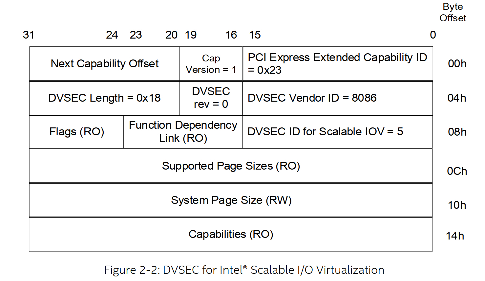

序言
首先需要说明的是这并不是一项很新的技术，因为早在2017年intel就对外expose了相关的spec。但是直到今天仍然还是停留在spec层面，不过好在随着intel SPR平台的推出intel也终于下定决心要enable这个feature了(其主要原因是SPR平台的许多feature比如DSA都是需要通过SIOV来enable)。那么今天我们就来解析一下这项技术，照例我们还是先来看一下其整体的架构说明。
硬件架构
在解析siov架构之前，我们先来看一下这些年来 I/O Virtualization的演进路线

接下来我们回归到SIOV架构上来，按照惯例我们还是先来看一下硬件底层的架构。为了让大家更好的理解相关架构，这里还是以SR-IOV做为对比
具体如图4所示，intel scalable IOV 主要是以queue为粒度来给上层应用提供服务，为此siov在硬件侧引入了一个ADI(Assignable Device Interfaces)的概念。在功能上它与VF相似，但是不同点在于所有的ADI共享同一个PF的BDF号、pci config_space和BAR空间。但是这个也引入了额外的问题：一是所有的ADI share同一个BDF号那在iommu这一侧如何区分来自不同的ADI的设备的DMA请求呢？另外一个就是一个pcie设备即使在msix的情况下他支持的最大中断数目也只能到2048，那如果一个PF上支持的ADI数量所使用的总的中断数量超过了这个limit将如何处理呢？
先说问题一，siov为了解决这个问题给每个ADI的tlp request额外加上了一个全局唯一的Process Address Space Identifier简称PASID的标识，但是如果多个ADI 直通给同一个vm则这些ADI的PASID是相同的。在iommu侧这种支持有PASID的io页表翻译模式称为scalable Mode Address Translation，没有PASID的称为legacy Mode。如果iommu 的Extend Capability Register的SMTS( Scalable Mode Translation)位置1则表明支持scalable mode，在scalabe mode模式下Root Table Address Register(RTADDR_REG)的TTM为01b。
如上图所示scalable Mode 的root table会关联两个contex table，一个Upper context table 对应着 device 号在16~31之间的PCI function，另外一个Lower Contex Table 对应device 号在0~15这个范围内的PCI function。每个context entry 都包含着一个指向PASID directory的指针，然后通过PASID 高14位(bits 19:6 )在scalable Mode PASID directory当中索引到scalabe Mode PASI Table，再通过PASID的低6位(5:0)索引到table当中具体的entry项。通过scalable Mode PASID table entry的PGTT(8:6)标志来确定Translation type。
再说问题二，为了解决这个中断limit的问题SIOV引入了新的中断存储机制叫IMS(interrupt message storage)，理论上IMS在支持的中断数量是没有上限的，从实现原理上来讲其仍然是message 格式的中断触发机制，每个message有一个DWORD 大小的payload和64-bit的address。这些message存储在 IMS的table里面，这个table可以有全部缓存在硬件上，也可以全部放在host memory里面。ADI是不能直接操作(比如修改)IMS的，它只能通过PF的 'Interrupt Message Generation Logic' 来触发中断。
上面说了两个问题的解决，下面我们说一下ADI的mmio，它是位于PF bar地址空间的一段连续的按页大小对齐的地址范围。每个ADI设备的mmio是相互独立的，ADI设备的mmio register又分为两类，一类是访问频率比较高的比如硬件层的doorbell，一类是不经常访问的或者慢路径访问的比如用来进行一些设备配置和管理等。另外，为了支持大量ADI设备的mmio，PF必须要实现prefetchable 64-bit BAR。原因是说PCIe non-prefetchable BARS的memory space 能支持的最大空间只有1GB，显然不能支持太多的ADI设备；而prefetchable 属性enable 的BARS 的memory space 可以超过4G。
说完mmio我们再聊一下如何确定PF是否支持SIOV。PF是通过PCI Express Designated Vendor Specific Extended Capability (DVSEC)这个cap来向PF driver report 是否来支持SIOV，具体DVSEC 格式如下

在pci驱动侧，相关检测代码如下：
/**
* pci_find_dvsec - return position of DVSEC with provided vendor and dvsec id
* @dev: the PCI device
* @vendor: Vendor for the DVSEC
* @id: the DVSEC cap id
*
* Return the offset of DVSEC on success or -ENOTSUPP if not found
*/
int pci_find_dvsec(struct pci_dev *dev, u16 vendor, u16 id)
{
u16 dev_vendor, dev_id;
int pos;
pos = pci_find_ext_capability(dev, PCI_EXT_CAP_ID_DVSEC);
if (!pos)
return -ENOTSUPP;
while (pos) {
pci_read_config_word(dev, pos + PCI_DVSEC_HEADER1, &dev_vendor);
pci_read_config_word(dev, pos + PCI_DVSEC_HEADER2, &dev_id);
if (dev_vendor == vendor && dev_id == id)
return pos;
pos = pci_find_next_ext_capability(dev, pos, PCI_EXT_CAP_ID_DVSEC);
}
return -ENOTSUPP;
}
bool pci_siov_supported(struct pci_dev *dev)
{
return pci_find_dvsec(dev, PCI_VENDOR_ID_INTEL, PCI_DVSEC_ID_INTEL_SIOV) < 0 ? false : true;
}
软件架构
上面说完了整个硬件的架构，下面我们来看一下在软件层面的实现
接着我们来分析新引入的两个组件(mdev这个框架我们在这里就不详细介绍了)
-
VDCM VDCM 全称是Virtual Device Composition Module，它主要负责将一个或者多个ADI组合成一个VDEV然后呈现给vm使用，同时它也负责一些trap到后端的mmio的解释执行，另外就是ADI设备的一些操作比如Reset和配置等。
-
VDEV 其实上面也已经讲了它是由一个或者多个ADI设备组成，在guest里面看到的就是一个标准的PCIe 设备。每个VDEV都有虚拟的requester id, config space, memory BAR，MSIX-table等，它们都是由VDCM来进行模拟的。
从上面的分析来看，VDCM在整个软件架构上扮演着非常重要的角色，下面我们结合一张图来看一下相关实现
-
VDEV mmio 从图中可以看到VDEV mmio实现分为三类：一类是直接map到 ADI的 mmio，类似SR-IOV场景下将硬件的MMIO通过EPT的方式直接让guest访问，避免大量的退出；一类是通过VDCM 模拟的mmio，guest里面在写这个mmio的时候会trap到 VDCM，然后需要VDCM进行解释和模拟相关的action，通常这类mmio是要是一些控制面的数据交互；一类是map到host侧的memory上，这类mmio通常存储的是一些参数或者数据，这样就避免了在读取或者写入的时候VDCM侧的解释和指令模拟。
-
VDEV Interrupts VDEV 会通过VDCM 虚拟出MSI或者MSIX的能力呈献给guest，当guest driver 去programs msi 或者msix的时候会被VDCM截获到然后做相关的中断虚拟化操作。这里需要说明的是慢路径上的中断是可以通过VMM提供的中断注入接口来触发，而快路径或者说是数据面上的中断是通过iommu的post interrupt来注入的。
总结
文章主要介绍了siov的相关架构，希望大家对SIOV能先有个整体的认知。相关的代码层面的东西这里就不介绍了，后面如果有时间可以再续一篇。但是不管SR-IOV还是SIOV其好像都忽略一个比较关键的问题，那就是随着硬件设备的增多导致iommu 上iotlb miss增加，从而直接影响数据面的性能。关于这个问题其实完全是可以通过软硬一体化的方案来解决的，有机会可以再分享一下。
参考资料
- intel scalable io virtualization spec
- Bring a Scalable IOV Capable Device into Linux World by Xin Zeng & Yi Liu